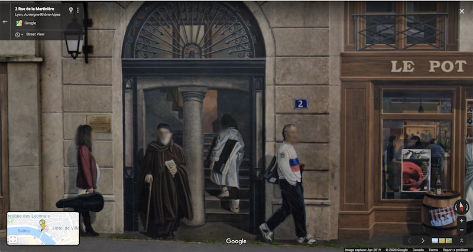
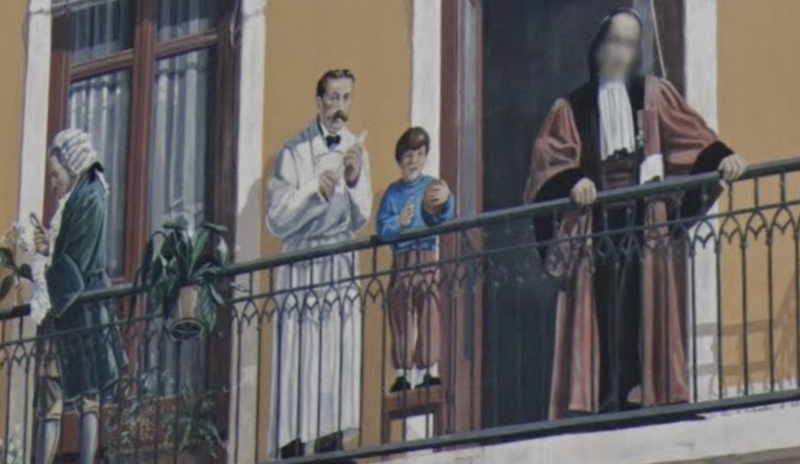
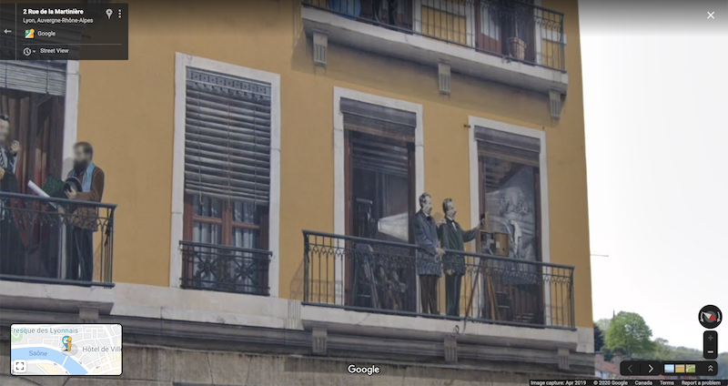
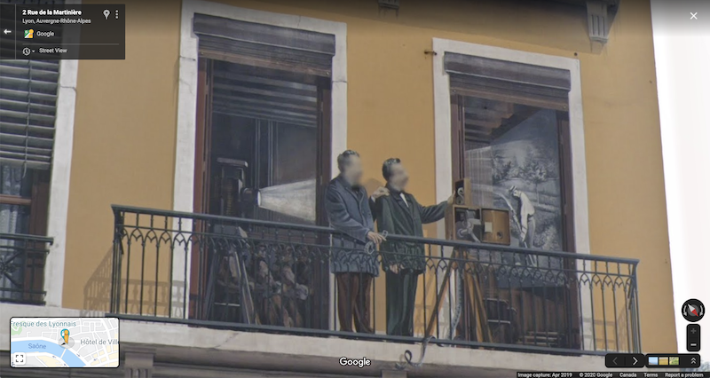
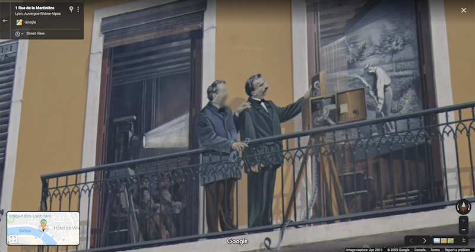
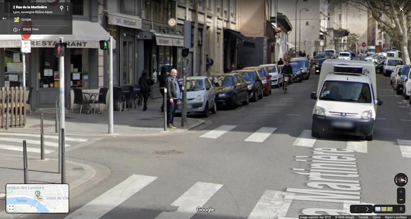
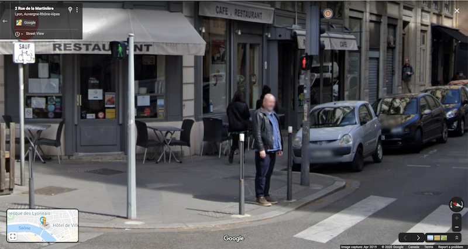

(source: https://thisislyon.fr/things-to-do/historical-monuments/la-fresque-des-lyonnais/)
When passing through the French city of Lyon last summer, I was delighted to learn that it’s home to a collection of enormous Frescos scattered throughout town. My girlfriend and I discovered one on accident and made a point of trying to see as many as we could during our time there. Somehow, we managed to miss probably the city's most famous: the Fresque des Lyonnais located in the 1st arrondissement. It’s a depiction of the Lyon's various historical figures, most of whom are painted out on their balcony.
(source: https://thisislyon.fr/things-to-do/historical-monuments/la-fresque-des-lyonnais/)
I was revisiting Lyon (virtually) the other day after reading a New Yorker article about the bakery located in the same building as the Fresco. After dropping myself in on Google Maps to take a closer look at the storefront, I decided to continue on a little virtual tour. I soon noticed something strange: Google Maps was blurring the faces of the painting.

At first, this made me laugh - I figured the algorithm Google uses was too smart for its own good. I suppose this isn’t all that odd, the paintings on the city’s frescos tend to be pretty realistic and the buildings themselves often blend into their surroundings.
I was about to close the tab when I noticed that it didn’t seem to be *that* smart:

I started moving the Google camera around to get a closer look, which led to the further realization that Google was actually censoring the faces in what appears to be real time:



The Lumière brothers, captured from three adjacent positions
In fact, I was able to reorient myself such that I could make almost every face on the wall become clear. What still puzzles me is that to my naked eye, none of the changes in perspective really made the faces look any less or more “real”.
I’m not sure if the face-recognition calculation is actually run on the spot (for performance’s sake, I would guess that it isn’t) but clearly something is going on here. It’s strange. One would assume that if a “person” is identified, their face is blurred no matter what. This doesn’t appear to be true, since its possible to re-orient ones self along the street in order to reveal different faces. Google seems to make each evaluation based solely on the camera's current location and perspective.
Out of curiosity, I played with some of the pedestrians nearby to see if there was some way to reproduce the results. This was a bit tricky, since advancing the camera even by one unit doesn’t necessarily hold the guarantee that the same pedestrian will still be around.

Google doesn’t seem to blur this guy until you zoom in a unit closer (I had to manually zoom myself in the above picture to get the shot):

His face is pretty blurry in that first photo anyways, so it's likely that Google is determining whether there is enough information to justify the blur.
I didn't play around too much more with it. My guess is that the blurring is correct 99% of the time, when it comes to real humans. Still, it was interesting to get a bit of insight into how (well, when) the blurring is applied. Do I get karma for finding a bug with The Frescos?